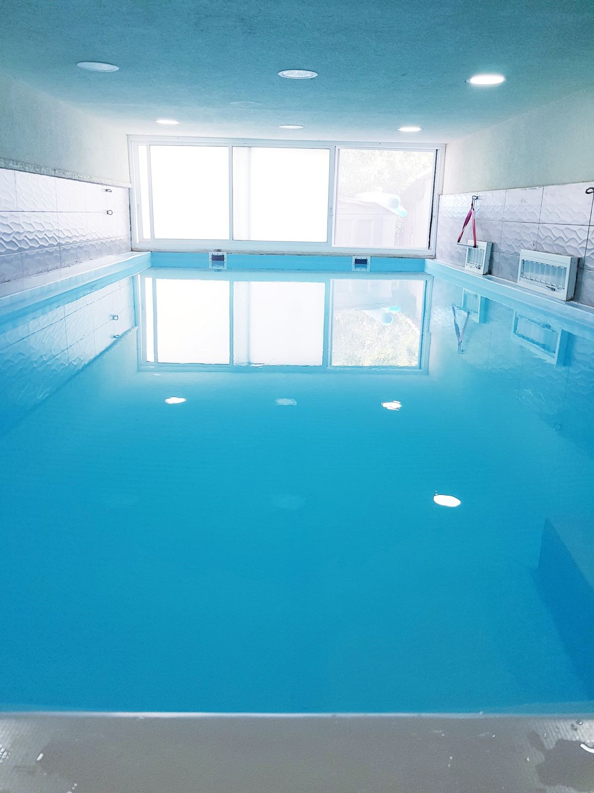
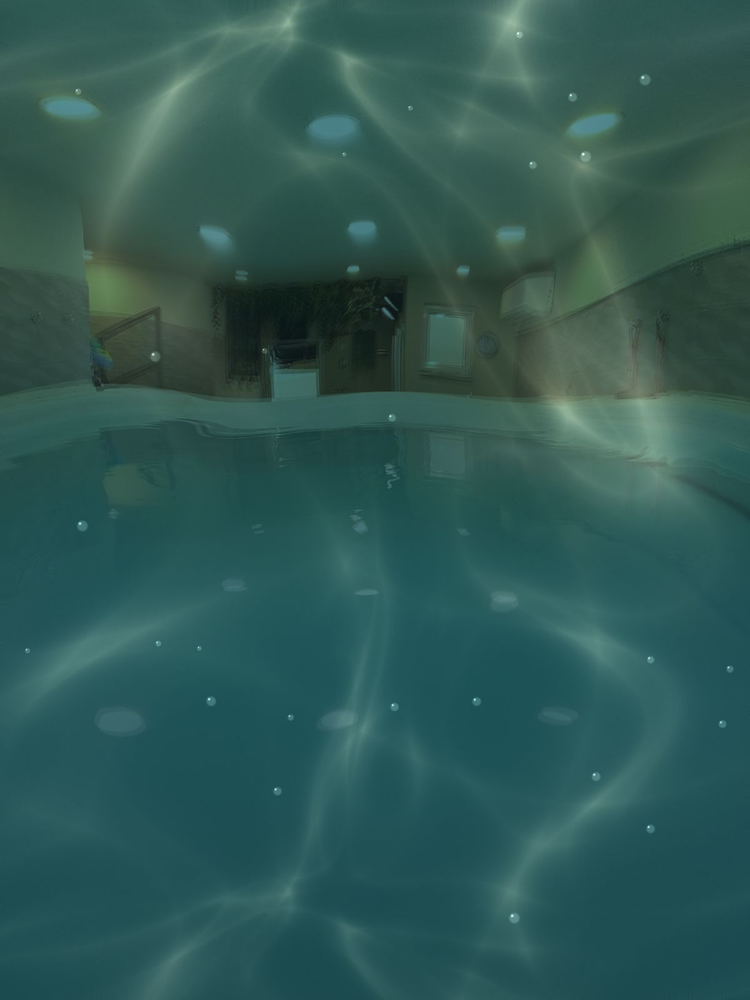
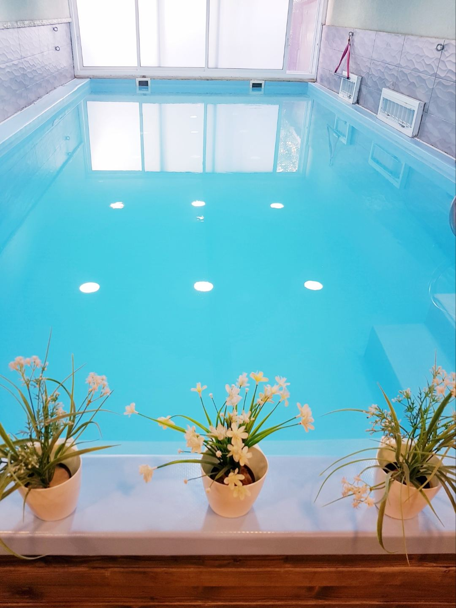
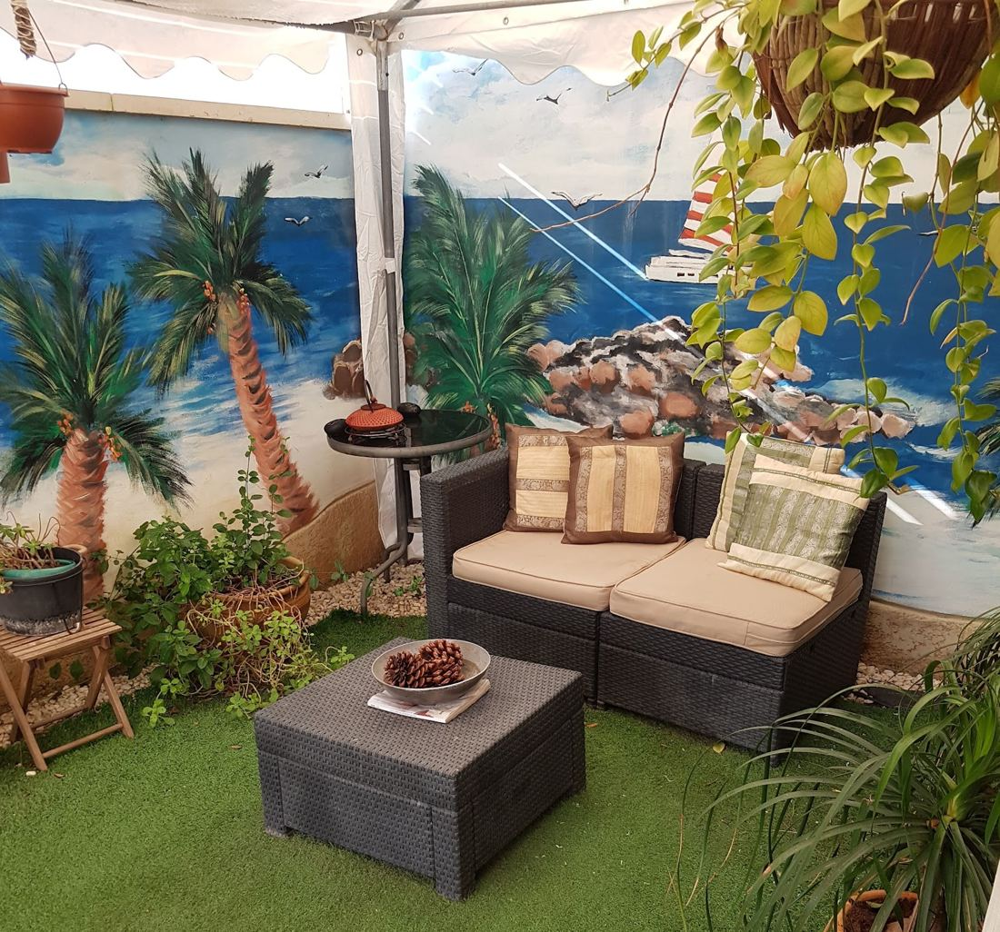

וואטסוWatsu
ציפה, תנועה עדינה ונשימה, במים חמימים.Floating, gentle movement and breath, in warm water.
קונספט לדוגמה שנבנה עבור וואטסו בקריות · זה אינו האתר הרשמי של העסקA sample concept built for Watsu BaKrayot · This is not the business’s official website
טיפולי וואטסו וסדנאות ארומתרפיה עם דינה אברג'ל, בבריכה פרטית מקורה בקריית בנימין, קרית אתא.Watsu sessions and aromatherapy workshops with Dina Abergel, in a private indoor pool in Kiryat Binyamin, Kiryat Ata.
5.019 ביקורות בגוגל19 Google reviews
בוואטסו את שוכבת על המים, ודינה מחזיקה ומניעה אותך בתנועות עדינות, בקצב הנשימה.In Watsu you lie back on the water while Dina holds you and moves you gently, in time with your breath.
לנשים בכל הגילים ולנערות, גם בהריון ואחרי לידה.For women of every age and for girls, in pregnancy and after birth too.

ציפה, תנועה עדינה ונשימה, במים חמימים.Floating, gentle movement and breath, in warm water.

שעת מנוחה במים, עם דמיון מודרך לקראת הלידה.An hour of rest in the water, with guided imagery ahead of the birth.
עולם של שמנים וריחות, בסדנה עם דינה.A world of oils and scents, in a workshop with Dina.
לאמא, לחברה, או לעצמך.For your mother, a friend, or yourself.
בריכה מקורה, חדר טיפולים לאור נרות ופינת ישיבה בגינה.An indoor pool, a candle-lit treatment room and a garden corner to sit in.
א׳–ד׳ 10:00–15:00
ה׳ 10:00–14:00Sun–Wed 10:00–15:00
Thu 10:00–14:00

5.0
״שלחנו את אמא כמתנה לטיפול אצל דינה ולאחר הטיפול אמא לא הפסיקה לפרגן… מומלץ מאוד, תודה ענקית דינה״“We sent Mom to Dina for a treatment as a gift, and afterwards she couldn’t stop praising it… Highly recommended, huge thanks Dina.”
״המים החמימים והתנועה העדינה יצרו תחושת רוגע עמוקה ושחרור מתחים. דינה מקצועית, רגישה ומשרה ביטחון בכל רגע.״“The warm water and the gentle movement created a deep sense of calm and release. Dina is professional, sensitive and makes you feel safe every moment.”
״החוויה הייתה לי קסומה ואני עוד הגעתי סקפטית, גיליתי עולם של שמנים, רוגע ותנועה במים בליווי דינה וידי הקסם שלה.״“It was magical for me, and I even came in sceptical. I discovered a world of oils, calm and movement in the water, with Dina and her magic hands.”
״אמא הגיעה לטיפול והתקבלה במאור פנים ובהכלה של דינה המדהימה. אחרי שעה של טיפול והדרכה בשילוב גוף נפש ונשימה נכונה, אמא שלנו יצאה מהמים לא אותו אדם.״“Mom was welcomed with warmth and care by the wonderful Dina. After an hour of treatment and guidance combining body, mind and proper breathing, our mother came out of the water a different person.”
״הייתי בטיפול במים אצלה וגם בסדנת ארומתרפיה. בשני הטיפולים הרגשתי חיבור למקום פנימי ועמוק שלא הצלחתי להגיע אליו לפני כן.״“I had a water treatment with her and also an aromatherapy workshop. In both I felt a connection to a deep inner place I hadn’t managed to reach before.”
Reviews translated from Hebrew. All reviews on Google
בחרי, והודעה מוכנה לדינה תיפתח בוואטסאפ.Choose, and a ready message to Dina opens in WhatsApp.
בריכה פרטית בשכונת קריית בנימין.A private pool in the Kiryat Binyamin neighbourhood.
| ראשוןSunday | 10:00–15:00 |
|---|---|
| שניMonday | 10:00–15:00 |
| שלישיTuesday | 10:00–15:00 |
| רביעיWednesday | 10:00–15:00 |
| חמישיThursday | 10:00–14:00 |
| שישיFriday | סגורClosed |
| שבתSaturday | סגורClosed |